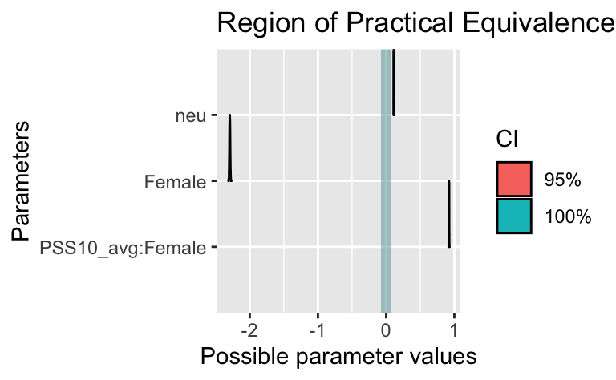

osf_d_path <- "https://osf.io/cjxua/?action=download"
d <- read_csv(osf_d_path)Warning: One or more parsing issues, call `problems()` on your data frame for details,
e.g.:
dat <- vroom(...)
problems(dat)Einer der (bisher) größten Studien der Untersuchung psychologischer Konsequenzen (oder Korrelate) der Covid-Zeit ist die Studie COVIDiStress.
Im Folgenden sollen Sie folgende Forschungsfrage untersuchen:
Forschungsfrage:
Ist der Unterschied zwischen Männern und Frauen (Dem_gender) im Hinblick zum Zusammenhang von Stress (PSS10_avg, AV) und Neurotizismus (neu, UV) vernachlässigbar klein?
Den Datensatz können Sie so herunterladen (Achtung, groß):
osf_d_path <- "https://osf.io/cjxua/?action=download"
d <- read_csv(osf_d_path)Warning: One or more parsing issues, call `problems()` on your data frame for details,
e.g.:
dat <- vroom(...)
problems(dat)Hinweise:
Antwortoptionen:
Pakete laden:
library(tidyverse)
library(rstanarm)
library(easystats)Relevante Spalten auswählen:
d2 <-
d %>%
select(PSS10_avg, neu, Dem_gender)Das sind die Variablen:
Deskriptive Statistiken zum Datensatz:
d2 %>%
describe_distribution()Variable | Mean | SD | IQR | Range | Skewness | Kurtosis | n | n_Missing
----------------------------------------------------------------------------------------
PSS10_avg | 2.63 | 0.74 | 1.00 | [1.00, 5.00] | 0.21 | -0.31 | 116097 | 9209
neu | 3.34 | 1.05 | 1.33 | [1.00, 6.00] | 0.07 | -0.45 | 108367 | 16939d2 %>%
count(Dem_gender)# A tibble: 4 × 2
Dem_gender n
<chr> <int>
1 Female 90400
2 Male 33126
3 Other/would rather not say 1474
4 <NA> 306Datensatz aufbereiten:
d3 <-
d2 %>%
filter(Dem_gender %in% c("Female", "Male")) %>%
drop_na() %>%
mutate(Female = ifelse(Dem_gender == "Female", 1, 0)) %>%
select(-Dem_gender)Check:
d3 %>%
count(Female)# A tibble: 2 × 2
Female n
<dbl> <int>
1 0 28371
2 1 78472Check:
d3 %>%
describe_distribution()Variable | Mean | SD | IQR | Range | Skewness | Kurtosis | n | n_Missing
----------------------------------------------------------------------------------------
PSS10_avg | 2.62 | 0.74 | 1.00 | [1.00, 5.00] | 0.22 | -0.32 | 106843 | 0
neu | 3.34 | 1.05 | 1.33 | [1.00, 6.00] | 0.07 | -0.45 | 106843 | 0
Female | 0.73 | 0.44 | 1.00 | [0.00, 1.00] | -1.06 | -0.87 | 106843 | 0Modell berechnen:
m1 <-
stan_glm(PSS10_avg ~ neu + Female + PSS10_avg:Female,
refresh = 0,
seed = 42,
data = d3)Modellkoeffizienten auslesen:
coef(m1) (Intercept) neu Female PSS10_avg:Female
2.1203846 0.1115801 -2.2922563 0.9222804 Posteriori-Verteilung auslesen:
parameters(m1)Parameter | Median | 95% CI | pd | Rhat | ESS | Prior
-------------------------------------------------------------------------------------------
(Intercept) | 2.12 | [ 2.11, 2.13] | 100% | 1.000 | 3242.00 | Normal (2.62 +- 1.84)
neu | 0.11 | [ 0.11, 0.11] | 100% | 1.000 | 3670.00 | Normal (0.00 +- 1.75)
Female | -2.29 | [-2.30, -2.28] | 100% | 1.000 | 2018.00 | Normal (0.00 +- 4.16)
PSS10_avg:Female | 0.92 | [ 0.92, 0.93] | 100% | 1.000 | 2061.00 | Normal (0.00 +- 1.37)Posteriori-Verteilung plotten:
plot(m1)
Rope berechnen:
rope(m1)# Proportion of samples inside the ROPE [-0.07, 0.07]:
Parameter | inside ROPE
------------------------------
(Intercept) | 0.00 %
neu | 0.00 %
Female | 0.00 %
PSS10_avg:Female | 0.00 %Rope visualisieren:
plot(rope(m1))
Categories: